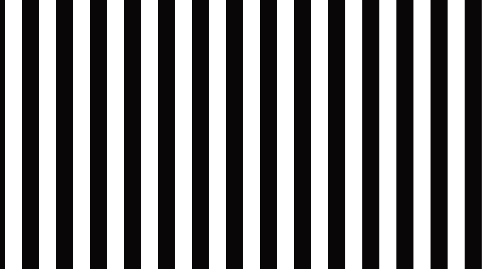
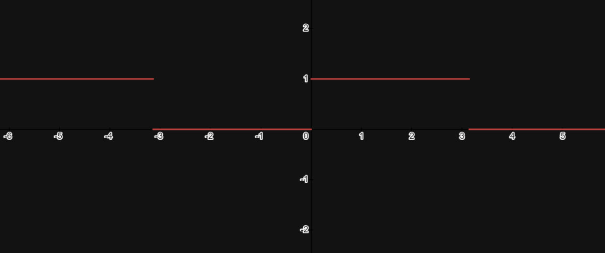

The White and Black Pattens :
The white and black line patterns are an alternation of black and white lines of this style:
or even many more lines than that:

So, but how does it work?
What makes these lines is just one line of code which is the one below:
float pattern = ceil(sin( uv.x )); //To put more line multiply UV
If we decompose the line of code we can see that it is a comma value (float) named pattern (because
it is a line pattern) which is equivalent to the rounding of its upper integer of the Sinusoid of
uv .x, and if we want horizontal lines, we replace “uv.x” with “uv.y”.
But so Graphically “ceil(sin(” gives this:

So it goes from 0 to 1 to 0 to 1 in a loop. But what does this have to do with lines you ask me?
Well this is very simple, when we set the output value of the screen to 1. the screen is displayed
in White, And in Black if it is equivalent to 0.
But how can you make any color other than Black, Gray and White?
And quite simply we can dose the quantity of Red, Green and Blue, and
if we put the same dose it will make our White, Gray and Black.
Now that explains we can play with some parameters of this pattern.
How to rotate it with the 2D Rotate function:
We can still do a lot of things with these patterns, but I'll let
you discover them and make these patterns, your patterns.
That's all for the White and Black line patterns.